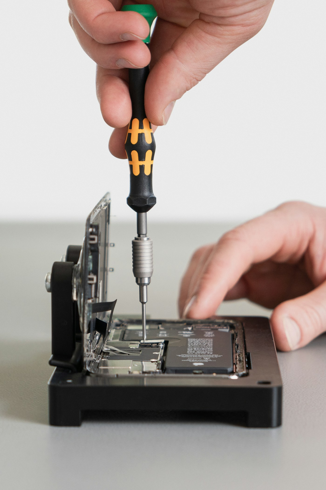

Port & Pixel / Repair services
Repair the problem.
Keep the phone.
Cracked screen? Fading battery? A connection that won’t cooperate? Let’s give your everyday essential the attention it needs.
- 01Assess the device
- 02Explain the options
- 03You decide

Explore the repairs
What needs a closer look?
Choose a service.
See the checks. Plan your next step.
01Screen Replacement
Cracked glass. Missed touches. A display gone dark.
Glass, display quality, and touch response are checked together. We’ll discuss compatible replacement options before any fitting.
- Cracked glass
- Display lines
- Unresponsive touch
02Battery Replacement
Less charge anxiety. More everyday life.
Rapid drain or unexpected shutdowns call for a battery-health check. Other power faults are considered before recommending a replacement.
- Rapid drain
- Shutdowns
- Charge won’t hold
03Charging Port Repair
A steady connection starts with the right check.
We check the cable, connector, and power path. Cleaning, connector work, or further repair may be appropriate after inspection.
- Loose connection
- Charging cuts out
- No charging response
04Software Troubleshooting
Get past the freezes, crashes, and restarts.
We review software behavior and settings, and discuss backups before any reset. Persistent symptoms may need hardware checks.
- App crashes
- Slow performance
- Repeated restarts
05Camera Repair
Bring the moments back into focus.
Camera functions, lens condition, and the module are checked to understand which part needs attention.
- Blurred photos
- Black preview
- Lens damage
06Speaker & Microphone Repair
Clearer calls. A better listening experience.
We check speaker output, microphone input, settings, and connections to find the source of quiet or distorted sound.
- Quiet calls
- Distorted audio
- Microphone issues
Confirm the repair scope, parts options, total cost, and timing after assessment.
Before you drop by
A little preparation.
A smoother visit.
Back up where possible. Bring your model details and any cable or charger related to the fault.
Prepare a repair requestDo I need to know what’s wrong?
No. Tell us the model and what you’re noticing. An assessment helps establish the cause.
How long does a repair take?
Timing depends on your device, the fault, and available parts. Confirm a device-specific timeframe with the shop.
Does a request confirm my visit?
No. This website prepares your request locally. The shop must separately confirm any visit and proposed repair.
Not sure where to start?